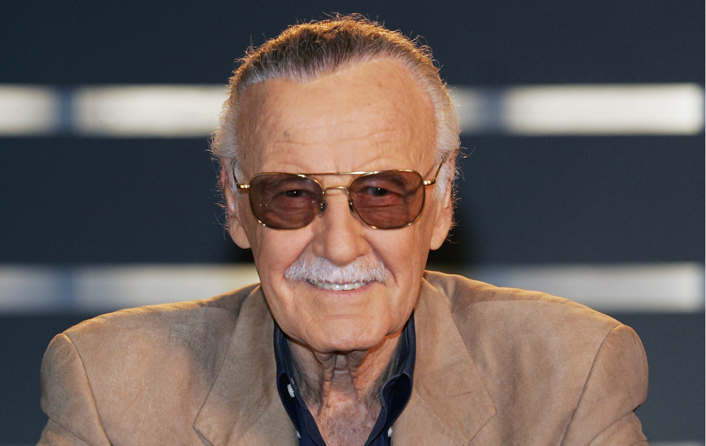

Stan Lee
A man who created a lot of superheroes

Here's a time line of Stan Lee's life:
- December 28, 1922 -
Stan Lee (born Stanley Martin Lieber /ˈliːbər/; December 28, 1922 – November 12, 2018) was an American comic book writer, editor, publisher, and producer. He rose through the ranks of a family-run business to become Marvel Comics' primary creative leader for two decades, leading its expansion from a small division of a publishing house to a multimedia corporation that dominated the comics industry.
- December 28, 1922 - Stanley Martin Lieber was born on December 28, 1922, in Manhattan, New York City, in the apartment of his Romanian-born Jewish immigrant parents, Celia (née Solomon) and Jack Lieber, at the corner of West 98th Street and West End Avenue in Manhattan. Lee was raised in a Jewish household, and in a 2002 interview, he stated when asked if he believed in God, "Well, let me put it this way... [Pauses.] No, I'm not going to try to be clever. I really don't know. I just don't know." His father, trained as a dress cutter, worked only sporadically after the Great Depression, and the family moved further uptown to Fort Washington Avenue, in Washington Heights, Manhattan. Lee had one younger brother named Larry Lieber. He said in 2006 that as a child he was influenced by books and movies, particularly those with Errol Flynn playing heroic roles. By the time Lee was in his teens, the family was living in an apartment at 1720 University Avenue in The Bronx. Lee described it as "a third-floor apartment facing out back". Lee and his brother shared the bedroom, while their parents slept on a foldout couch.
- 1939 -
Lee attended DeWitt Clinton High School in the Bronx. In his youth, Lee enjoyed writing and entertained dreams of writing the "Great American Novel" one day. He said that in his youth he worked such part-time jobs as writing obituaries for a news service and press releases for the National Tuberculosis Center; delivering sandwiches for the Jack May pharmacy to offices in Rockefeller Center; working as an office boy for a trouser manufacturer; ushering at the Rivoli Theater on Broadway; and selling subscriptions to the New York Herald Tribune newspaper. At fifteen, Lee entered a high school essay competition sponsored by the New York Herald Tribune, called "The Biggest News of the Week Contest." Lee claimed to have won the prize for three straight weeks, goading the newspaper to write him and ask him to let someone else win. The paper suggested he look into writing professionally, which Lee claimed "probably changed my life." He graduated from high school early, aged sixteen and a half, in 1939 and joined the WPA Federal Theatre Project.
- 1939 -
With the help of his uncle Robbie Solomon, Lee became an assistant in 1939 at the new Timely Comics division of pulp magazine and comic-book publisher Martin Goodman's company. Timely, by the 1960s, would evolve into Marvel Comics. Lee, whose cousin Jean was Goodman's wife, was formally hired by Timely editor Joe Simon.
- 1941 -
When Simon and his creative partner Jack Kirby left late in 1941, following a dispute with Goodman, the 30-year-old publisher installed Lee, just under 19 years old, as interim editor. The youngster showed a knack for the business that led him to remain as the comic-book division's editor-in-chief, as well as art director for much of that time, until 1972, when he would succeed Goodman as publisher.
- May 1941 -
His duties were prosaic at first. "In those days [the artists] dipped the pen in ink, [so] I had to make sure the inkwells were filled", Lee recalled in 2009. "I went down and got them their lunch, I did proofreading, I erased the pencils from the finished pages for them". Marshaling his childhood ambition to be a writer, young Stanley Lieber made his comic-book debut with the text filler "Captain America Foils the Traitor's Revenge" in Captain America Comics #3 (cover-dated May 1941), using the pseudonym Stan Lee (a play on his first name, "Stanley"), which years later he would adopt as his legal name. Lee later explained in his autobiography and numerous other sources that because of the low social status of comic books, he was so embarrassed that he used a pen name so that nobody would associate his real name with comics when he some day wrote the Great American Novel. This initial story also introduced Captain America's trademark ricocheting shield-toss.
- August 1941 -
He graduated from writing filler to actual comics with a backup feature, "'Headline' Hunter, Foreign Correspondent", two issues later. Lee's first superhero co-creation was the Destroyer, in Mystic Comics #6 (August 1941). Other characters he co-created during this period fans and historians call the Golden Age of Comic Books include Jack Frost, debuting in U.S.A. Comics #1 (August 1941), and Father Time, debuting in Captain America Comics #6 (August 1941).
- September 1943 -
Stan Lee appears in one panel as "third assistant office boy" in Terry-Toons #12 (September 1943). Stan Lee is featured prominently as a story character in Margie #36 (June 1947).
- 1945 -
Lee entered the United States Army in early 1942 and served within the US as a member of the Signal Corps, repairing telegraph poles and other communications equipment. He was later transferred to the Training Film Division, where he worked writing manuals, training films, slogans, and occasionally cartooning. His military classification, he said, was "playwright"; he added that only nine men in the U.S. Army were given that title. In the Army, Lee's division included many famous or soon-to-be famous people, including three-time Academy Award-winning director Frank Capra, New Yorker cartoonist Charles Addams, and children's book writer and illustrator Theodor Geisel, later known to the world as "Dr. Seuss." Vincent Fago, editor of Timely's "animation comics" section, which put out humor and funny animal comics, filled in until Lee returned from his World War II military service in 1945. Lee was inducted into the Signal Corps Regimental Association and was given honorary membership of the 2nd Battalion of 3rd U.S. Infantry Regiment out of Joint Base Lewis-McChord at the 2017 Emerald City Comic Con for his prior service.
- December 05, 1947 -
From 1945 to 1947, Lee lived in the rented top floor of a brownstone in the East 90s in Manhattan. He married Joan Clayton Boocock, originally from Newcastle, England, on December 5, 1947, and in 1949, the couple bought a house in Woodmere, New York, on Long Island, living there through 1952. Their daughter Joan Celia "J. C." Lee was born in 1950. Another daughter, Jan Lee, died a few days after her birth in 1953.
- March 1950 -
He later appears in a mask on the cover of Black Rider #8 (March 1950), albeit as a character model, not as Stan Lee.
- January 1963 -
Lee and Jack Kirby appear as themselves in The Fantastic Four #10 (January 1963), the first of several appearances within the fictional Marvel Universe. The two are depicted as similar to their real-world counterparts, creating comic books based on the "real" adventures of the Fantastic Four.
- 1965 -
Lee's revolution extended beyond the characters and storylines to the way in which comic books engaged the readership and built a sense of community between fans and creators. He introduced the practice of regularly including a credit panel on the splash page of each story, naming not just the writer and penciller but also the inker and letterer. Regular news about Marvel staff members and upcoming storylines was presented on the Bullpen Bulletins page, which (like the letter columns that appeared in each title) was written in a friendly, chatty style. Lee remarked that his goal was for fans to think of the comics creators as friends, and considered it a mark of his success on this front that, at a time when letters to other comics publishers were typically addressed "Dear Editor", letters to Marvel addressed the creators by first name (e.g., "Dear Stan and Jack"). Lee recorded messages to the newly formed Merry Marvel Marching Society fan club in 1965. By 1967, the brand was well-enough ensconced in popular culture that a March 3 WBAI radio program with Lee and Kirby as guests was titled "Will Success Spoil Spiderman [sic]".
- 1966 -
Following Ditko's departure from Marvel in 1966, John Romita Sr. became Lee's collaborator on The Amazing Spider-Man. Within a year, it overtook Fantastic Four to become the company's top seller. Lee and Romita's stories focused as much on the social and college lives of the characters as they did on Spider-Man's adventures. The stories became more topical, addressing issues such as the Vietnam War, political elections, and student activism. Robbie Robertson, introduced in The Amazing Spider-Man #51 (August 1967) was one of the first African-American characters in comics to play a serious supporting role. In the Fantastic Four series, the lengthy run by Lee and Kirby produced many acclaimed storylines as well as characters that have become central to Marvel, including the Inhumans and the Black Panther, an African king who would be mainstream comics' first black superhero.
- March 1966 -
The story frequently cited as Lee and Kirby's finest achievement is the three-part "Galactus Trilogy" that began in Fantastic Four #48 (March 1966), chronicling the arrival of Galactus, a cosmic giant who wanted to devour the planet, and his herald, the Silver Surfer. Fantastic Four #48 was chosen as #24 in the 100 Greatest Marvels of All Time poll of Marvel's readers in 2001. Editor Robert Greenberger wrote in his introduction to the story that "As the fourth year of the Fantastic Four came to a close, Stan Lee and Jack Kirby seemed to be only warming up. In retrospect, it was perhaps the most fertile period of any monthly title during the Marvel Age." Comics historian Les Daniels noted that "[t]he mystical and metaphysical elements that took over the saga were perfectly suited to the tastes of young readers in the 1960s", and Lee soon discovered that the story was a favorite on college campuses. Lee and artist John Buscema launched The Silver Surfer series in August 1968.
- September 1969 -
The following year, Lee and Gene Colan created the Falcon, comics' first African-American superhero, in Captain America #117 (September 1969). In 1971, Lee indirectly helped reform the Comics Code. The U. S. Department of Health, Education and Welfare had asked Lee to write a comic-book story about the dangers of drugs and Lee conceived a three-issue subplot in The Amazing Spider-Man #96–98 (cover-dated May–July 1971), in which Peter Parker's best friend becomes addicted to prescription drugs. The Comics Code Authority refused to grant its seal because the stories depicted drug use; the anti-drug context was considered irrelevant. With Goodman's cooperation and confident that the original government request would give him credibility, Lee had the story published without the seal. The comics sold well and Marvel won praise for its socially conscious efforts. The CCA subsequently loosened the Code to permit negative depictions of drugs, among other new freedoms.
- 1972 -
At the 2016 Comic-Con International, Lee introduced his digital graphic novel Stan Lee's God Woke, with text originally written as a poem he presented at Carnegie Hall in 1972. The print-book version won the 2017 Independent Publisher Book Awards' Outstanding Books of the Year Independent Voice Award.
- 1972 -
In 1972, Lee stopped writing monthly comic books to assume the role of publisher. His final issue of The Amazing Spider-Man was #110 (July 1972) and his last Fantastic Four was #125 (August 1972).
- July 1972 -
Lee was shown in numerous cameo appearances in many Marvel titles, appearing in audiences and crowds at many characters' ceremonies and parties. For example, he is seen hosting an old-soldiers reunion in Sgt. Fury and his Howling Commandos #100 (July 1972), in The Amazing Spider-Man #169 (June 1977), as a bar patron in Marvels #3 (1994), at Karen Page's funeral in Daredevil vol. 2, #8 (June 1998), and as the priest officiating at Luke Cage and Jessica Jones' wedding in New Avengers Annual #1 (June 2006). Lee and Kirby appear as professors in Marvel Adventures Spider-Man #19 (2006).
- January 03, 1977 -
Lee became a figurehead and public face for Marvel Comics. He made appearances at comic book conventions around America, lecturing at colleges and participating in panel discussions. Lee and John Romita Sr. launched the Spider-Man newspaper comic strip on January 3, 1977. Lee's final collaboration with Jack Kirby, The Silver Surfer: The Ultimate Cosmic Experience, was published in 1978 as part of the Marvel Fireside Books series and is considered to be Marvel's first graphic novel. Lee and John Buscema produced the first issue of The Savage She-Hulk (February 1980), which introduced the female cousin of the Hulk, and crafted a Silver Surfer story for Epic Illustrated #1 (Spring 1980).
- October 1978 -
Kirby later portrayed himself, Lee, production executive Sol Brodsky, and Lee's secretary Flo Steinberg as superheroes in What If #11 (October 1978), "What If the Marvel Bullpen Had Become the Fantastic Four?", in which Lee played the role of Mister Fantastic.
- 1981 -
He moved to California in 1981 to develop Marvel's TV and movie properties. He was an executive producer for, and made cameo appearances in Marvel film adaptations and other movies. He occasionally returned to comic book writing with various Silver Surfer projects including a 1982 one-shot drawn by John Byrne, the Judgment Day graphic novel illustrated by John Buscema, the Parable limited series drawn by French artist Mœbius, and The Enslavers graphic novel with Keith Pollard. Lee was briefly president of the entire company, but soon stepped down to become publisher instead, finding that being president was too much about numbers and finance and not enough about the creative process he enjoyed.
- 1981 -
The Lees resided in the Long Island town of Hewlett Harbor, New York, from 1952 to 1980. They also owned a condominium on East 63rd Street in Manhattan from 1975 to 1980, and during the 1970s owned a vacation home in Remsenburg, New York. For their move to the West Coast in 1981, they bought a home in West Hollywood, California, previously owned by comedian Jack Benny's radio announcer Don Wilson.
- 1994 -
Lee was inducted into the comic book industry's Will Eisner Award Hall of Fame in 1994 and the Jack Kirby Hall of Fame in 1995. He received the NEA's National Medal of Arts in 2008.
- July 1996 -
He appears in Generation X #17 (July 1996) as a circus ringmaster narrating (in lines written by Lee) a story set in an abandoned circus. This characterization was revived in Marvel's "Flashback" series of titles cover-dated July 1997, numbered "-1", introducing stories about Marvel characters before they became superheroes.
- 1998 -
However, following Lee's death, his daughter J.C. had gathered a legal team to review the various legal situation around Lee's intellectual property from his later years. In September 2019, J.C. filed a new lawsuit against POW in the United States District Court for the Central District of California related not only to recent events, but to regain the intellectual property rights that Lee had set up on founding Stan Lee Entertainment in 1998. The complaint identified a period between 2001 and 2017 where Lee's partners Gill Champion and Arthur Lieberman were said to have misled Lee on various intellectual property rights deals.
- 1998 -
Lee stepped away from regular duties at Marvel in the 1990s, though he continued to receive an annual salary of $1 million as chairman emeritus. In 1998 he and Peter Paul began a new Internet-based superhero creation, production, and marketing studio, Stan Lee Media. It grew to 165 people and went public through a reverse merger structured by investment banker Stan Medley in 1999, but, near the end of 2000, investigators discovered illegal stock manipulation by Paul and corporate officer Stephan Gordon. Stan Lee Media filed for Chapter 11 bankruptcy protection in February 2001. Paul was extradited to the U.S. from Brazil and pleaded guilty to violating SEC Rule 10b-5 in connection with trading his stock in Stan Lee Media. Lee was never implicated in the scheme.
- 2001 -
In 2001, Lee, Gill Champion, and Arthur Lieberman formed POW! (Purveyors of Wonder) Entertainment to develop film, television and video game properties. Lee created the risqué animated superhero series Stripperella for Spike TV. That same year, DC Comics released its first work written by Lee, the Just Imagine... series, in which Lee re-imagined the DC superheroes Superman, Batman, Wonder Woman, Green Lantern, and the Flash.
- 2002 -
Following the success of Fox Studio's 2000 X-Men film and Sony's then-current Spider-Man film, Lee sued Marvel in 2002, claiming that the company was failing to pay his share of the profits from movies featuring the characters he had co-created. Because he had done so as an employee, Lee did not own them, but in the 1990s, after decades of making little money licensing them for television and film, Marvel had promised him 10% of any future profits. Lee and the company settled in 2005 for an undisclosed seven-figure amount.
- 2004 -
In 2004, POW! Entertainment went public through a reverse merger again structured by investment banker Stan Medley. Also that year, Lee announced a superhero program that would feature former Beatle Ringo Starr as the lead character. Additionally, in August of that year, Lee announced the launch of Stan Lee's Sunday Comics, a short-lived subscription service hosted by Komikwerks.com. From July 2006 until September 2007 Lee hosted, co-created, executive-produced, and judged the reality television game show competition Who Wants to Be a Superhero? on the Sci-Fi Channel.
- 2006 -
The 2000s saw Lee's public persona penetrate the public consciousness through merchandising, branding and appearances in Marvel's books in which he was featured as a character in the Marvel Universe. In 2006, Marvel commemorated Lee's 65 years with the company by publishing a series of one-shot comics starring Lee himself meeting and interacting with many of his co-creations, including Spider-Man, Doctor Strange, the Thing, Silver Surfer, and Doctor Doom. These comics also featured short pieces by such comics creators as Joss Whedon and Fred Hembeck, as well as reprints of classic Lee-written adventures. At the 2007 Comic-Con International, Marvel Legends introduced a Stan Lee action figure. The body beneath the figure's removable cloth wardrobe is a re-used mold of a previously released Spider-Man action figure, with minor changes. Comikaze Expo, Los Angeles' largest comic book convention, was rebranded as Stan Lee's Comikaze Presented by POW! Entertainment in 2012.
- March 2007 -
In March 2007, after Stan Lee Media had been purchased by Jim Nesfield, the company filed a lawsuit against Marvel Entertainment for $5 billion, claiming Lee had given his rights to several Marvel characters to Stan Lee Media in exchange for stock and a salary. In June 2007, Stan Lee Media sued Lee; his newer company, POW! Entertainment; and POW! subsidiary QED Entertainment.
- 2008 -
In 2008 POW! Entertainment debuted the manga series Karakuri Dôji Ultimo, a collaboration between Lee and Hiroyuki Takei, Viz Media and Shueisha, The following year POW! released Heroman, which was written by Lee, and serialized in Square Enix's Monthly Shōnen Gangan with the Japanese company Bones. In 2011, Lee started writing a live-action musical, The Yin and Yang Battle of Tao, and created the limited series Blood Red Dragon, a collaboration with Todd McFarlane and Japanese rock star Yoshiki.
- 2008 -
In 2008, Lee wrote humorous captions for the political fumetti book Stan Lee Presents Election Daze: What Are They Really Saying? In April of that year, Brighton Partners and Rainmaker Animation announced a partnership with POW! to produce a CGI film series, Legion of 5. Other projects by Lee announced in the late 2000s included a line of superhero comics for Virgin Comics, a TV adaptation of the novel Hero, a foreword to Skyscraperman by skyscraper fire-safety advocate and Spider-Man fan Dan Goodwin, a partnership with Guardian Media Entertainment and The Guardian Project to create NHL superhero mascots and work with the Eagle Initiative program to find new talent in the comic book field.
- 2010 -
The Stan Lee Foundation was founded in 2010 to focus on literacy, education, and the arts. Its stated goals include supporting programs and ideas that improve access to literacy resources, as well as promoting diversity, national literacy, culture and the arts.
- October 2011 -
In October 2011, Lee announced he would partner with 1821 Comics on a multimedia imprint for children, Stan Lee's Kids Universe, a move he said addressed the lack of comic books targeted for that demographic; and that he was collaborating with the company on its futuristic graphic novel Romeo & Juliet: The War, by writer Max Work and artist Skan Srisuwan. At the 2012 San Diego Comic-Con International, Lee announced his YouTube channel, Stan Lee's World of Heroes, which airs programs created by Lee, Mark Hamill, Peter David, Adrianne Curry and Bonnie Burton, among others. Lee wrote the book Zodiac, released in January 2015, with Stuart Moore. The film Stan Lee's Annihilator, based on a Chinese prisoner-turned-superhero named Ming and in production since 2013, was released in 2015.
- September 2012 -
In September 2012, Lee underwent an operation to insert a pacemaker, which required cancelling planned appearances at conventions. Lee eventually retired from convention appearances by 2017.
- 2017 -
In 2017, POW was acquired by Camsing International, a Chinese company, during the period that Lee was caring for his terminally-ill wife as well as dealing with his own failing eyesight. Lee filed a US$1 billion lawsuit against POW in May 2018, asserting that POW did not disclose the terms of its acquisition by Camsing to him. Lee stated that POW's CEO Shane Duffy and co-founder Gill Champion had presented him with what they said was a non-exclusive license for POW for him to sign, under Camsing, to use his likeness and other intellectual property; however, this contract turned out to be an exclusive license, which Lee claimed he would never have entered. Additionally, Lee's lawsuit contended that POW took over his social media accounts and was impersonating him inappropriately. POW considered these complaints without merit, and that both Lee and his daughter J.C. were aware of the terms. The lawsuit was dropped in July 2018, with Lee issuing a statement that "The whole thing has been confusing to everyone, including myself and the fans, but I am now happy to be surrounded by those who want the best for me", and was happy to be working again with POW again.
- July 06, 2017 -
On July 6, 2017, his wife of 69 years, Joan, died of complications from a stroke. She was 95 years old.
- 2018 -
In collaboration with others at Marvel—particularly co-writer/artists Jack Kirby and Steve Ditko—he co-created numerous popular fictional characters, including superheroes Spider-Man, the X-Men, Iron Man, Thor, the Hulk, Black Widow, the Fantastic Four, Black Panther, Daredevil, Doctor Strange, Scarlet Witch and Ant-Man. These and other characters' introductions in the 1960s pioneered a more naturalistic approach than previously to superhero comics, and in the 1970s Lee challenged the restrictions of the Comics Code Authority, indirectly leading to changes in its policies. In the 1980s he pursued the development of Marvel properties in other media, with mixed results. Following his retirement from Marvel in the 1990s, he remained a public figurehead for the company, and frequently made cameo appearances in films and television shows based on Marvel characters, on which he received an executive producer credit. Meanwhile, he continued independent creative ventures into his 90s, until his death in 2018.
- April 2018 -
Another figure in the alleged elder abuse was Jerardo Olivarez, his former business manager who was introduced to Lee by J.C. after his wife's death. Lee filed suit against Olivarez in April 2018, calling him one of several "unscrupulous businessmen, sycophants and opportunists" that approached him during this period. According to Lee's complaint, after gaining Lee's power of attorney, Olivarez fired Lee's personal banker, convinced Lee to allow for transfers of millions of dollars from his accounts, including using some of the funds to purchase a condominium, and also changed Lee's will. In April 2018, The Hollywood Reporter published a report that claimed Lee was a victim of elder abuse; the report asserted that among others, Keya Morgan, business manager of Lee and a memorabilia collector, had been isolating Lee from his trusted friends and associates following his wife's death, to obtain access to Lee's wealth, estimated to amount to US$50 million. In August 2018, Morgan was issued a restraining order to stay away from Lee, his daughter, or his associates for three years. The Los Angeles Superior Court charged Morgan in May 2019 with five counts of abuse for events in mid-2018. The charges are false imprisonment, grand theft of an elder or dependent adult, fraud, forgery, and a charge of elder abuse.
- November 12, 2018 -
Lee died on November 12, 2018, six weeks before his 96th birthday at Cedars-Sinai Medical Center in Los Angeles, California, after being rushed there in a medical emergency earlier in the day. Earlier that year, Lee revealed to the public that he had been battling pneumonia and in February was rushed to the hospital for worsening conditions at around the same time. The immediate cause of death listed on his death certificate was cardiac arrest with respiratory failure and congestive heart failure as underlying causes. It also indicated that he suffered from "aspiration pneumonia." His body was cremated and his ashes were given to his daughter.
- June 2020 -
In June 2020, Judge Otis D. Wright II dismissed J.C. Lee’s lawsuit against POW! Entertainment, declaring it "frivolous" and "improper", sanctioning J.C. Lee for $1,000,000, and sanctioning her lawyers for $250,000 individually and severally. The court also gave POW Entertainment the right to make a motion to recover legal fees. "We feel vindicated by the Court's decision today," said POW! in a statement. "Stan purposefully created POW! eighteen years ago with me as a place to safeguard his life's work. Before he passed, Stan was adamant that POW! continue to protect his creations and his identity after he was gone, because he trusted that we would safeguard his legacy for generations to come."
- July 06, 2020 -
On July 6, 2020, Genius Brands acquired exclusive worldwide rights to use Lee’s name, physical likeness and signature as well as licensing rights to his name and original IPs from POW! Entertainment. The assets will be placed under a new joint-venture with POW!, called Stan Lee Universe.